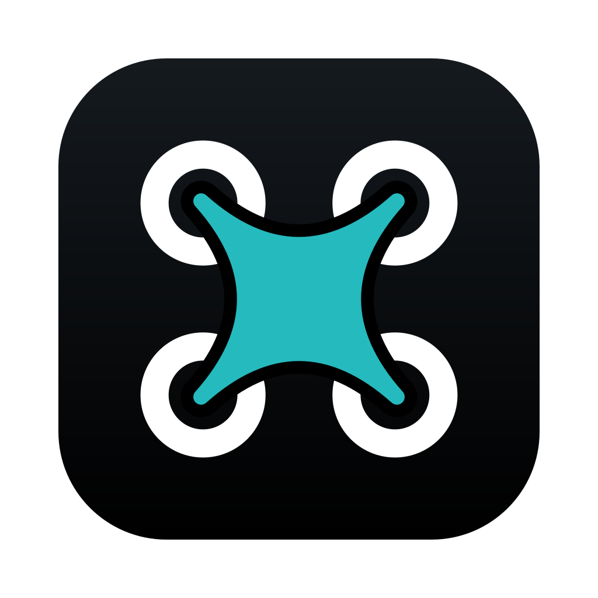

☰

Waypoint Studio
Файл ▾
Новый маршрут
⌘N
Сохранить в библиотеку
⌘S
Сохранить в файл (.json)
Открыть / импорт…
⌘O
✈ Сравнить с журналом полёта…
🧹 Удалить все точки маршрута
🧹 Очистить всё (точки, POI, взлёт, зоны)
Форматы импорта: Litchi CSV, DJI KMZ/WPML, KML/KMZ, GeoJSON, GPX, JSON
Экспорт ▾
📲 Пульт DJI RC 2: открыть / записать задания…
DJI Fly — путевые точки (.kmz)
DJI Fly — разбить по батареям (.kmz × N)
DJI Pilot 2 (.kmz)
Litchi — CSV (Mission Hub)
Google Earth — 3D + виртуальный полёт (.kml)
GPX
GeoJSON
Резервная копия (.json)
📤 Отправить последний файл…
↶
↷
✚
Точки
◎
POI
⌂
Взлёт
▱
Зона
╱
Линия
✋
Просмотр
?
⬆ Обновить
📲 Пульт
RU
⚙
?
ⓘ
?
‹
›
✕